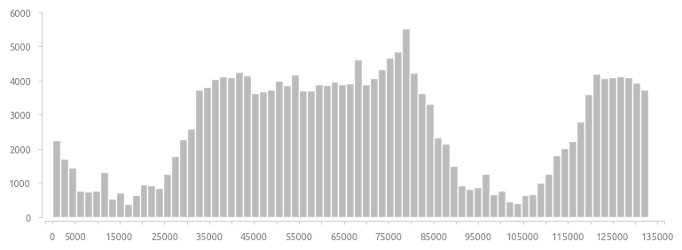
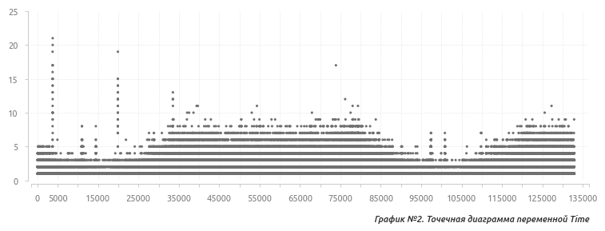

В работе используется популярный датасет Kaggle с информацией о банковских транзакциях. Датасет состоит из 31 переменной и 284807 элементов. Целевая переменная бинарна и не сбалансирована: 284315 нулевых значений против 492 единиц (0.172% от общего количества). Все предикторы являются количественными переменными. Пропущенные значения отсутствуют.
Страница датасета на сайте Kaggle
Переменные
Time - время, прошедшее с момента совершения первой транзакции;
V1...V28 - переменные, полученные после преобразования сырых данных с помощью PCA;
Amount - сумма транзакции;
Class - метка мошенничества (целевая переменная);
Данные разбиваются на два датасета в соотношении 3 к 7: обучающий (199364) и проверочный (85443).
Сначала исследуются переменные, для которых известен контекст. Это время совершения транзакции (Time), сумма транзакции (Amount) и метка мошенничества (Class).
Переменная Time
Time - количественная переменная, единицы измерения - секунды. Пропущенные значения отсутствуют, почти половина значений - уникальные (45% от общего числа). Гистограмма показывает достаточно равномерное распределение данных в районе отметки в 4000 элементов с двумя минимумами около 15000 и 100000 секунд.

Отобразим число транзакций на единицу времени с помощью точечной диаграммы. В области плато число транзакций равно 7-8 на единицу времени, а в районе провалов - 1-3.

Учитывая, что данные берутся за два дня, а также принимая во внимание тот факт, что в ночные часы общее количество транзакций снижается, можно сделать предположение относительно времени суток и перевести имеющиеся секунды в часы и минуты.
Предположим, что минимальное число транзакций совершается в 0:00 часов - это соответствует двум минимумам на гистограмме и ориентировочно значениям 15000 и 100000 секунд. Если первая транзакция, время в секундах которой равно 0, была совершена в 20:00, то первая полночь (первый минимум гистограммы) приходится на 14400 секунд, а вторая - на 100800.
Преобразованная переменная Time выглядит следующим образом.